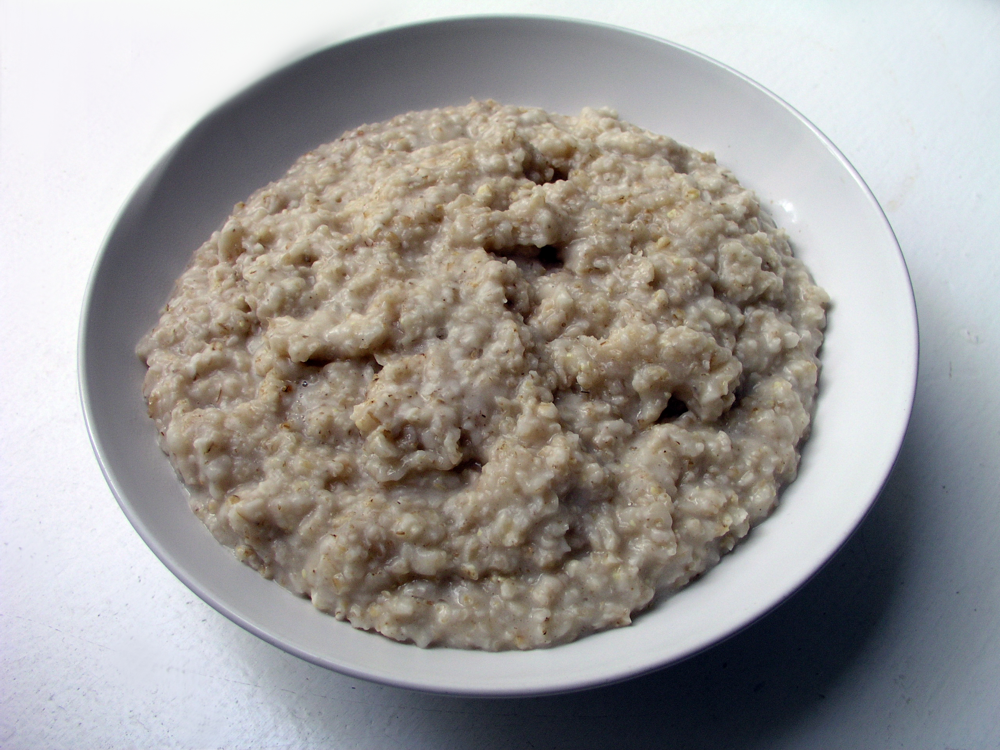

Oh, My Oatmeal!
This recipe is for oatmeal, which is a hot breakfast made from oats.
Figure: Playful Porridge

- 1 tablespoon of unsalted butter
- 1 large pinch kosher salt
- 1 ½ cups of water
- 1 cup of quick-cooking oats
- 1 orange or lemon
- 1 handful fresh or dried fruit
- brown sugar
- milk
- 1 handful of nuts
- Combine the butter, salt, and water in a small saucepan and bring to a boil
- Finely grate the citrus zest into the pan
- Bring to a boil again, reduce to a simmer, and stir in fruit
- Stir constantly until oats are cooked and dried fruit is slightly plumped for 2 minutes
- Divide into 2 bowls and sprinkle with sweetener of your choice
- Drizzle with non-dairy milk and top off with nuts